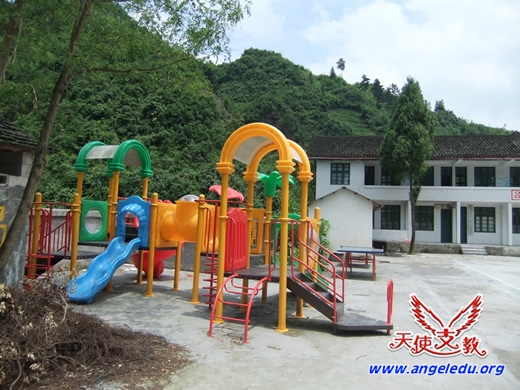

农村孩子的真实需要 -“自立”
|
当前各种社会力量都热衷于为农村孩子捐助各种现成的物质或金钱，这对农村孩子的成长是极其不利的，比如前面我们提到的各种学生个人物资的捐赠让学生养成了不劳而获的习惯。但另一方面一些不合适的校园配套建设，也对农村学生的成长带来极大的阻碍。下面我们将通过一些对比事例来探讨农村孩子的另一种需要。 自制篮球架与捐赠的游乐设施
"湘西磨刀小学操场边的学生自制篮球架"
一位志愿者曾经在农村支教期间，观察到一件令他这个在城市长大的人，觉得非常不可思议的事情。
志愿者所在学校是一所村小，平时只有一、二、三年级和学前班上课。有段时间到周末就会有一个半大孩子，拿着木工工具到学校的小操场折腾。他一个从山上砍树、刨皮、钉木板、做篮框、挖坑、立架。完全凭着一个人力量完成了一个简易篮球架的制作和安装。
后来了解到这是个在乡完小读六年级的本村孩子。因为喜欢打篮球，但是村里没篮球架，于是就自己动手来做了一个简易篮球架。

"湘西吕洞小学校园内的全新儿童游乐设施"
而当我们另一所乡村支教学校接收到外面捐赠的全套幼儿游乐设备时，也让专门研究农村留守儿童教育的卢安克觉得不可思议。他说出了这段话:“为什么正好在这个强调创造性的时代出现那么多谋杀孩子创造性的事情？之前在没有钱的时候,农村的孩子会在河边等地方改造自然环境或制作自己的东西。自己来做也就是创新。但有了钱的人给他们买了已完成的东西，让他们玩被程序指定的游戏,一点创新改造的机会都没有了。好心人的钱会不会谋杀农村孩子的创新？”
试想一下，如果村里早就有了各种现成的体育设施，那个自己做篮球架的孩子，还有动力去为了自己兴趣去亲手再做一个篮球架吗？
曾几何时，我们自己小的时候，尤其是有农村生活经历的，不都是利用身边的物件，来制作出自己需要的东西吗？既然我们的能力来自于当初自然环境的锻炼，那我们成年后为什么又不断去给予农村孩子（也包括自己的孩子）现成的东西。以抹杀他们将来赖以生存的动手能力、创新能力呢？ 尽管父母们为了追求物质，让农村的孩子才变成了留守儿童。但为什么还是有很多父母不让他们孩子，像城市的孩子一样消费呢？因为他们知道：过多的消费和关注会害他们的孩子，而较艰苦简单的生活会锻炼他们的生活能力，会让他们的心健康地成长。 从以上事例来看，农村孩子最需要我们不要剥夺他们依靠自身能力来创造自己需求的成长机会，也就是他们未来在社会生活中，用以生存的所能依靠的能力——自立。 |